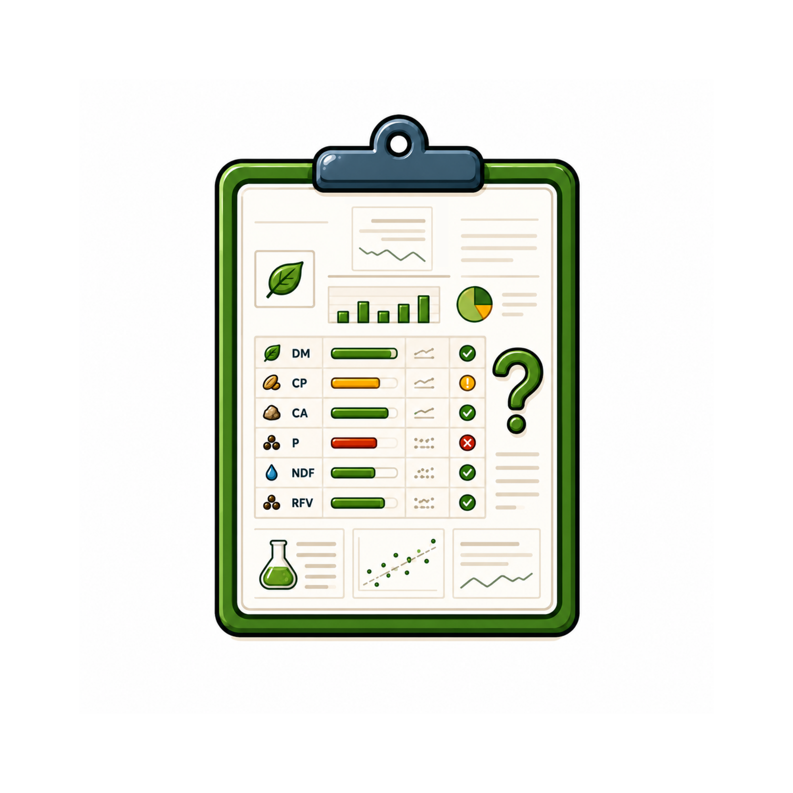
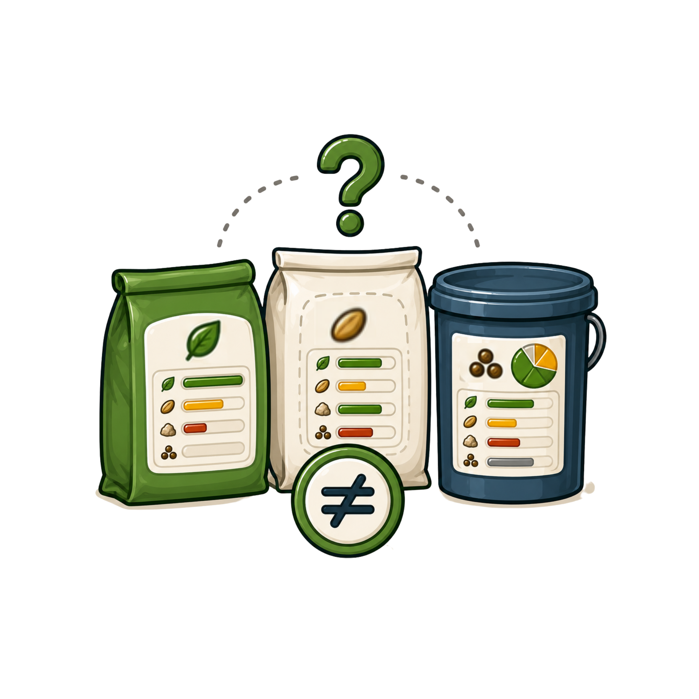
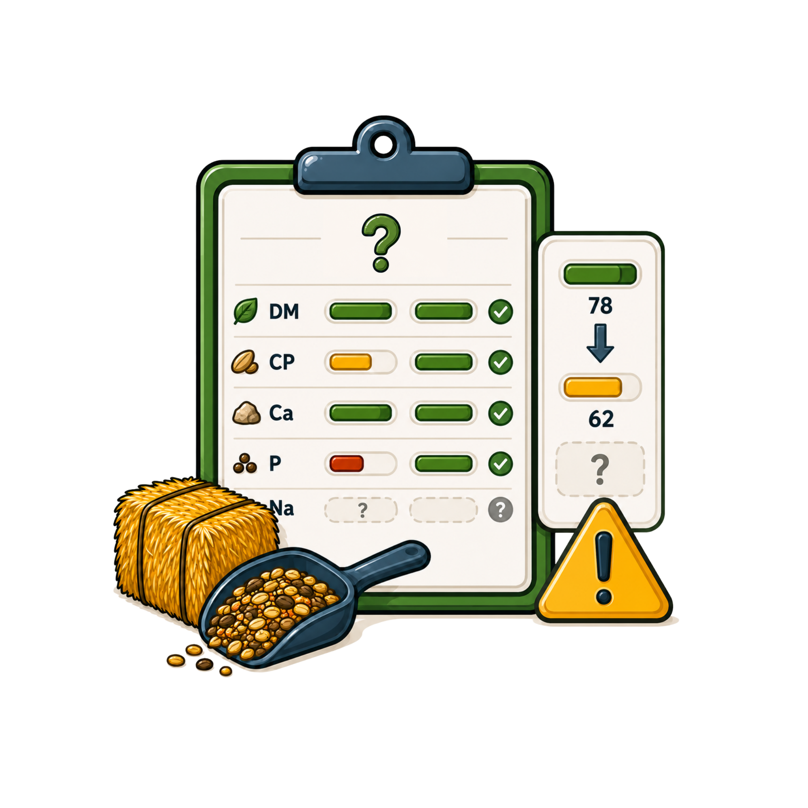
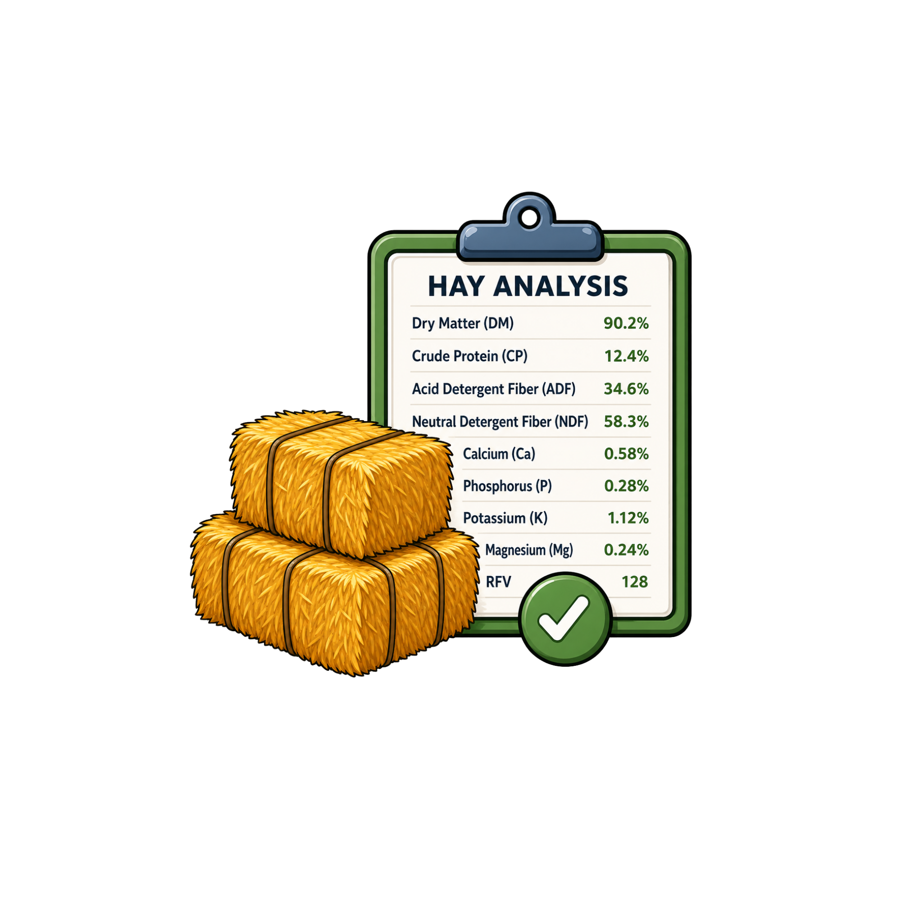
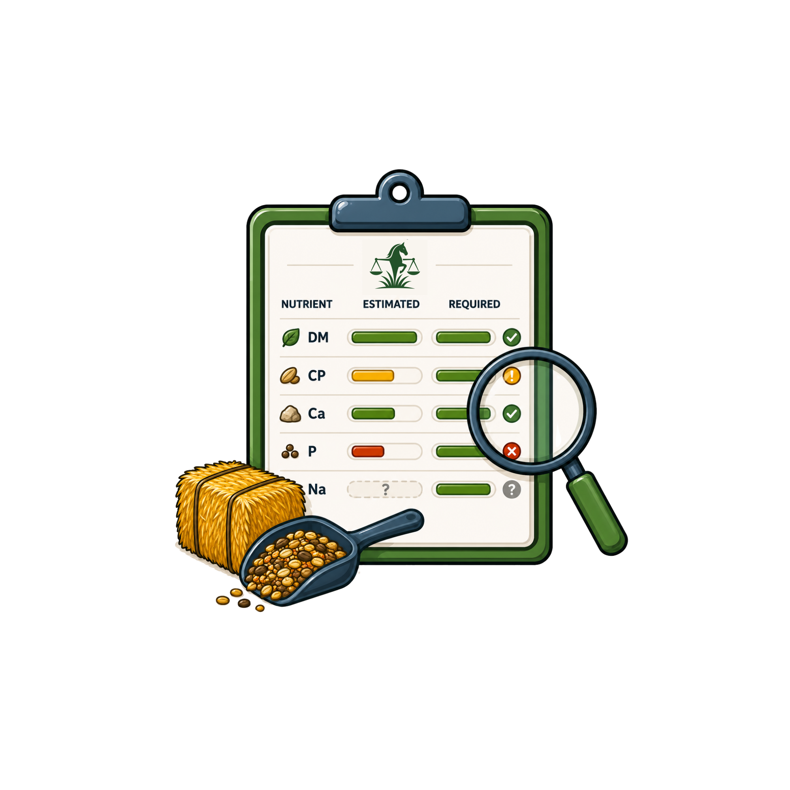
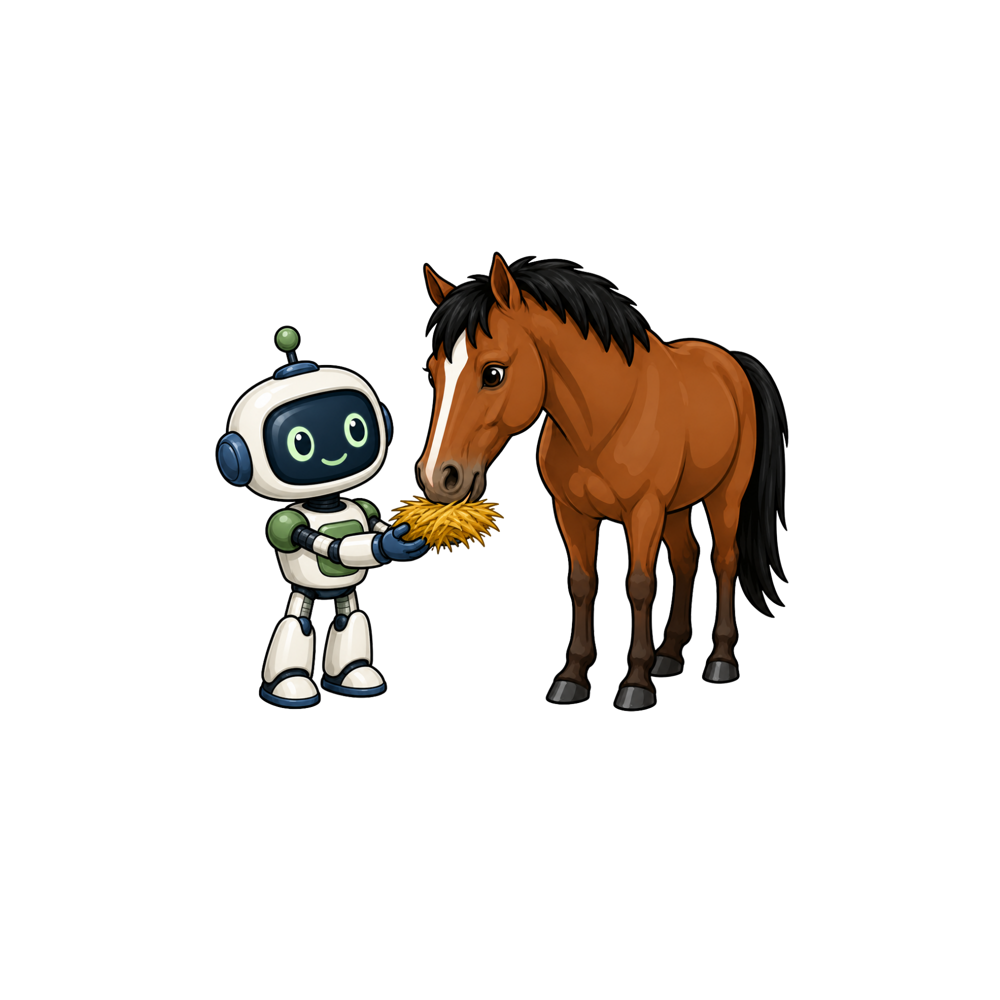

Forage analysis reportsare technical
Forage-first nutrition support
Horse owners need practical tools that help connect complex nutrition data to everyday feeding decisions. EquiBalance bridges the gap between raw numbers and clear next steps.

Forage analysis reports
Feed labels are
Missing data can
Add your forage, feed, supplement, and horse profile data.

Compare estimated nutrients against requirements to identify possible imbalances or missing information.

Read clear explanations and warnings before making decisions.
EquiBalance is an educational decision-support tool only. The information provided does not constitute veterinary advice. Ration changes should be reviewed with a qualified equine nutritionist, veterinarian, or other licensed animal health professional before making changes to a horse’s diet.